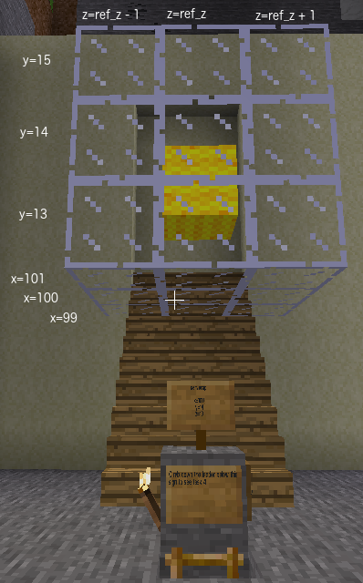

There is an even easier way than using for loops.
Place a 3x3x3 cube of glass blocks centred at (100, 14, ref_z). Use wool for the centre block
Once you have completed this task, Minetest task 3 will be complete.
Placing multiple blocks of the same kind at the same time is such a common
requirement, the build command has been designed to accept number sequences
for the x, y and z coordinates. Previously we have used a for loop.
for y in [13, 14, 15]:mc.build(99, y, 0, glass)This can now be rewritten in one line
mc.build(99, [13, 14, 15], 0, glass)It will place three glass blocks at (99, 13, 0), (99, 14, 0) and (99, 15, 0). Number sequences are not restricted to one parameter. If there is more than one sequence then it works like nested loops.
mc.build([99, 100], [13, 14, 15], 0, glass)places six glass blocks at (99, 13, 0), (99, 14, 0), (99, 15, 0), (100, 13, 0), (100, 14, 0), (100, 15, 0).
Each sequence of numbers can be stored in a variable rather than typed directly
in the build command. The numbers in the sequences don't even need to be consecutive.
seq_x = [99, 101]seq_y = [13, 15]mc.build(seq_x, seq_y, 0, glass)places four glass blocks at (99, 13, 0), (99, 15, 0), (101, 13, 0), (101, 15, 0).
If you do more than one build command for the same position, the second command will overwrite
the first command